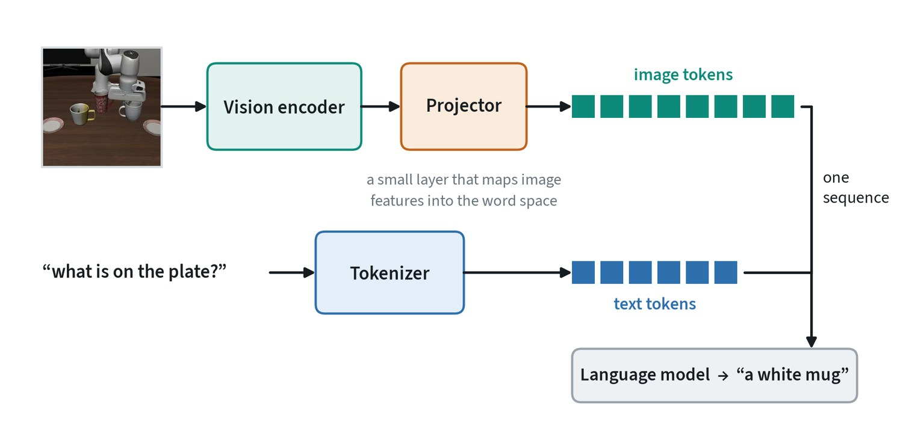

Pretrain once, adapt many times

A foundation model is trained on broad data at great cost and then reused for many tasks at low cost. Pretraining takes enormous data and compute and is done by a few groups. Adaptation takes a small dataset and a modest budget and is done by everyone. Almost no one trains from scratch any more. The skill is choosing a starting model and adapting it well.
Two kinds matter most here. Language models are decoder transformers trained to predict the next token; they carry broad knowledge and follow instructions. Vision-language models add a vision encoder in front, so they can answer questions about images and video. A vision-language model is the usual starting point for a robot policy.
Transfer works because general features carry over and a little task data goes a long way. The risk travels with it: the model’s gaps and biases transfer too.
How a vision-language model sees


A vision-language model is two pretrained models joined by a small bridge. The vision encoder turns the image into patch features. The projector maps those features into the same space as word tokens. From there the language model treats them as words it happens to have been given.
Two practical points follow. An image costs hundreds of tokens, so several cameras and several frames fill the context quickly. And the model sees the image only as well as the vision encoder does: detail the encoder discards cannot be recovered by the language model.
The adaptation ladder
There are several ways to get a pretrained model to do your task. Try the cheap rungs first, and climb only as far as the task needs. Each rung costs more data, compute and upkeep.
| Method | What changes | Data needed | Reach for it when |
|---|---|---|---|
| Prompting | Only the input text | None | The model already knows how and needs instructions |
| In-context examples | The input, with a few worked examples | A handful | The output format or style is specific |
| Retrieval augmentation | The input, with documents fetched at run time | A document store | Answers depend on facts the model lacks |
| LoRA and adapters | Small added weight matrices; the base is frozen | Hundreds to thousands | A new skill or domain on a limited budget |
| Full fine-tuning | All the weights | Thousands and up | A large shift, such as a new robot or new kind of output |
| Distillation | A smaller student copies the adapted model | The teacher’s outputs | The result must run on a small device |
LoRA stands for low-rank adaptation. Instead of updating a large weight matrix, it learns two small matrices whose product is added to it, training a fraction of a percent of the parameters. For robot policies, full fine-tuning is still common because actions are a new kind of output, but a frequent compromise is LoRA on the language backbone plus a newly trained action head. The data counts above are rough orders of magnitude.
Sampling: temperature
A language model outputs a probability for every possible next token. How one is picked from that list is a setting, not part of the model.

Temperature rescales the scores before they become probabilities. Near zero the model almost always takes its top choice, which is repeatable and can be dull. Higher values give variety and more mistakes. A common companion, top-p sampling, discards the unlikely tail before picking. For structured output and for robot actions written as tokens, use a low temperature.
From answering to acting
- Reasoning. Have the model write intermediate steps before its answer, often called chain of thought. This trades extra compute at run time for accuracy.
- Tool use. The model emits a structured call, such as a search or a piece of code to run, and the result is fed back as new input. It can then act on facts it was never trained on.
- Agents. A loop of observe, decide, act and observe again, useful for multi-step work.
These are the bridge from chat models to systems that do work. A robot is an agent whose tools are motors, and the reasoning idea returns in robot policies as stating the plan before acting.
Context length and made-up answers
The context window is how many tokens the model can read at once: the instructions, the documents, the images and its own output so far. Anything outside it does not exist for the model. Long contexts cost more, respond more slowly, and details in the middle are recalled less reliably than those at the start and end.
A language model always produces fluent text, including when it has nothing to base it on. A confident wrong answer of this kind is called a hallucination. The defences are to give the model the facts through retrieval, to ask for output in a form that can be checked, and to verify anything that matters. For a robot the check is physical: confirm that the object the model named is actually in view before acting on it.
Common mistakes
- Fine-tuning first. Many tasks are solved by a better prompt or by retrieval, at a fraction of the cost.
- Forgetting what was lost. Fine-tuning on a narrow dataset can erase general abilities the base model had.
- Skipping the baseline. Measure the unadapted model first, or you cannot say what adaptation bought.
Terms
- Foundation model
- A large model pretrained on broad data and reused for many tasks.
- Fine-tuning
- Continuing training on task data.
- LoRA
- Adapting a model by training small added matrices.
- Context window
- The amount of input the model can read at once.
- Projector
- The small layer that maps image features into a language model’s token space.
- Temperature
- A setting that sharpens or flattens the probabilities a model samples from.
- Context window
- The number of tokens a model can read at once.
- Hallucination
- Fluent output that is not supported by the input or by fact.
Further reading
- Hu et al., 2021. LoRA: Low-Rank Adaptation of Large Language Models.
- Lewis et al., 2020. Retrieval-Augmented Generation for Knowledge-Intensive NLP Tasks.
- Wei et al., 2022. Chain-of-Thought Prompting Elicits Reasoning in Large Language Models.
- Liu et al., 2023. Visual Instruction Tuning (LLaVA).
- Holtzman et al., 2019. The Curious Case of Neural Text Degeneration (top-p sampling).